--
vs
--
At least three different Argentinian players appeared to be involved in a brawl with their Spanish counterparts after Sunday’s final.
Sports Illustrated
Grandfather tossed by Yellowstone bison speaks out
NBC News
For all the hysteria over “woke” casting and ahistorical choices, Christopher Nolan’s epic is on track to make $200 million globally during its opening weekend.
WIRED
Relationship OCD is gaining awareness, but limited data means little is known about how common the condition is.
BBC
Travel writers share their favorite farm stores, pantries, and markets with specialty goods, local meat and produce, and culinary souvenirs. These small grocers are destinations for food-focused travelers, offering a peek at local makers and flavors, plus
Food & Wine
Argentina players could face a fine or suspension if they are found guilty of breaking FIFA rules following their World Cup final defeat.
Caught Offside
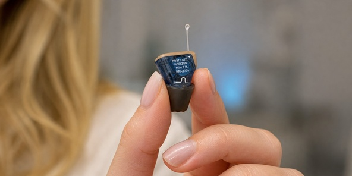
Leandro Paredes faces a lengthy FIFA suspension after being sent off for clashing with Gavi and Eric Garcia in Argentina’s World Cup final loss to Spain.
Goal
Leandro Paredes drew the ire of Spain’s World Cup squad on Sunday. One day later, Lamine Yamal got his payback on the Argentina midfielder.
Sporting News
Sepp Blatter has joined the attack on Gianni Infantino, his successor as the Fifa president, while Javier Tebas has criticised the lack of an opposition candidate next year
The Guardian
Cristian Romero is ‘now certain’ to leave Tottenham Hotspur after the World Cup... 😯
Football365
Seemingly out of nowhere, ESPN has parted ways with Ryan Clark, and the NFL world is kind of surprised by the network’s decision.
PFSN
After a bizarre showcase at the Fanatics Fest, one NFL radio host was stunned by the display from Tom Brady alongside Logan Paul.
PFSN
The superstar QB is working his way back from a torn ACL.
Sporting News
If the Washington Nationals are going to make a push for the playoffs, they need a better relief staff. At this point in the season, it’s clear that won’t come
Sports Illustrated
MADRID (AP) — Crowds gathered in Madrid on Monday for Spain’s World Cup victory parade after the team beat defending champion Argentina 1-0 in the final. Spain is celebrating a second men’s World Cup title, its first since capturing the trophy in 2010.
The Associated Press
The midsummer party in Vegas is a showcase for the next wave of NBA talent. Our correspondent in the desert empties her notebook
The Guardian
Spain won, Argentina thrilled, and Erling Haaland won hearts. From a crazy third-place game to ‘Country Roads’, these are the moments we’ll remember.
USA TODAY
The captain recounts the whole drama.
SFGate
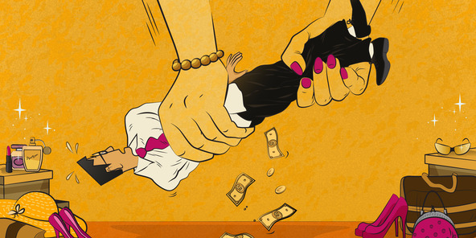
The Travel Show visits a spectacular Colorado landmark that doubles as an adrenaline-fuelled playground.
BBC
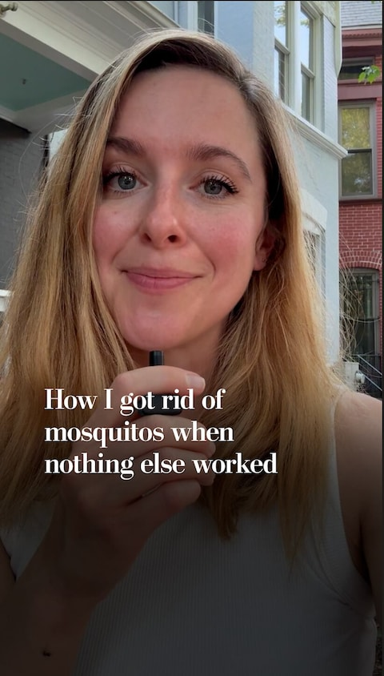
This approach has nearly wiped out mosquitoes on some islands. Could it work in your backyard? Optimist reporter Maggie Penman breaks it down.
The Washington Post
Lee Seung-ho watched the nearly 300 million won ($202,770) stock-trading fortune he built with a 500% margin loan evaporate in just four weeks in May, but he plans to borrow again and return to the market the moment he has enough capital. Rachel Graham has more.
Reuters
Team of firefighters saved the pup from the water near East Palo Alto in a mission that utilized boats, trucks and a drone
The Guardian
“Every second Trump prolongs his war in Iran is another second our service members remain in danger,” said one Democratic lawmaker, amid mounting concern over the human toll.
Time
The pilot, Kenneth Jouppi, argues that taking his 1969 Cessna would violate the Eighth Amendment’s “Excessive Fines Clause.”
CBS News
Turmoil likely as Trump officials say Canada unfairly discriminated against US autos, alcohol and dairy products
The Guardian
It’s the first time a Lebanese president has visited the White House since 2009.
Axios
Designers say that as well as offering a degree of protection from surveillance, their clothes make a powerful fashion statement about the importance of privacy
The Guardian
For those who are burned out, perimenopausal, or both, dancing all night can be a panacea. It’s great exercise, lowers stress, boosts energy and provides connection. No wonder so many are doing it
The Guardian
Just like vinyl before it, a new generation of young music fans have begun adopting the long-declining format
Exclaim!
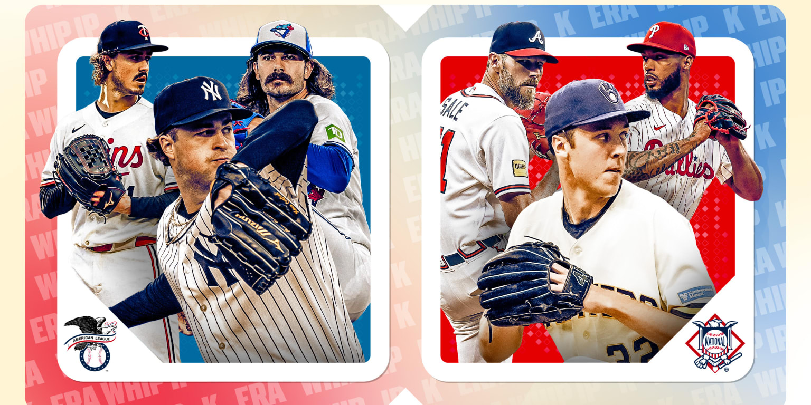
The races for the AL and NL Cy Young Awards were somewhat volatile during the early months of the season. We started with consensus favorites, then watched other leaders emerge and still other contenders make enough noise to keep things interesting. But o
MLB
Bichette is in his first year after leaving the Blue Jays.
Sporting News
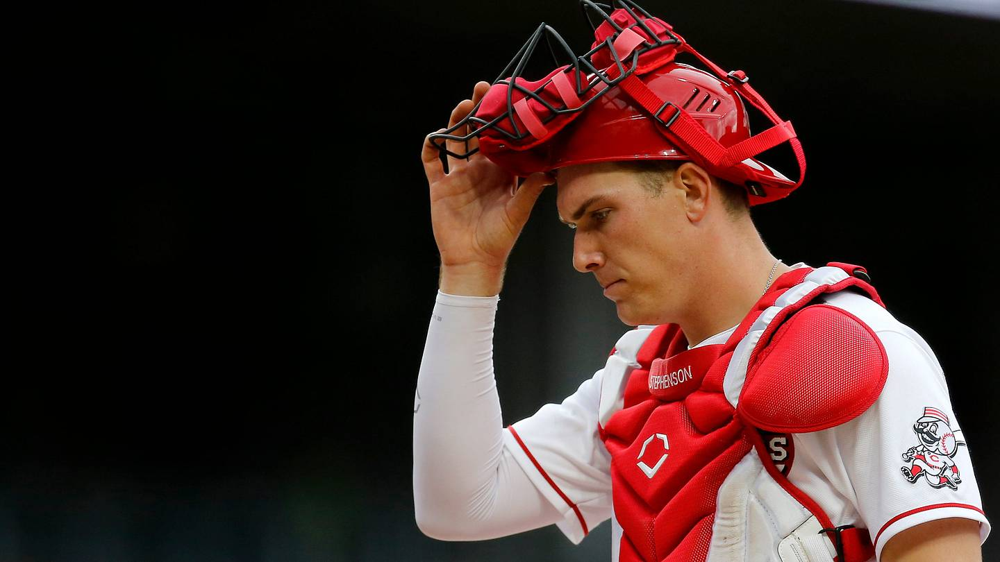
He’s been red hot at the plate recently.
Sports Illustrated
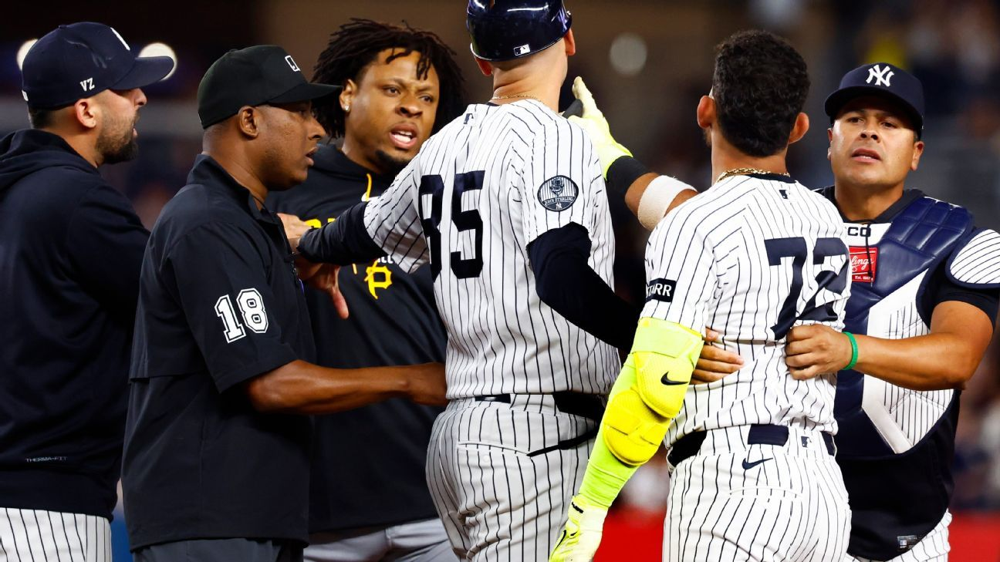
The New York Yankees’ offense awoke from its struggles with eight runs in a win over the Pittsburgh Pirates on Monday, but fireworks erupted in the eighth inning when the benches cleared after Jose Caballero irritated Dennis Santana.
ESPN
The A’s have made their trade decision with Langeliers.
Sporting News
BOSTON (AP) — Caleb Durbin hit a tiebreaking homer over the Green Monster with two outs in the eighth inning, and the Boston Red Sox extended the second-longest winning streak in club history to 14 games, beating Baltimore 6-5 on Monday night to snap the Orioles’ season-best win streak at seven.
The Associated Press
What was supposed to be a luxurious urban development for wealthy foreigners has become an eerie half-finished ghost town in Türkiye
Architectural Digest
Lionel Messi’s World Cup career has spanned six tournaments, from his debut as an 18-year-old in Germany in 2006 to his latest appearance in 2026. The Argentina captain scored his first World Cup goal in 2006, led his country to the final in 2014, and com
The Associated Press
More than 3,000 solar panels power Jack’s Solar Garden, cool the land and help it turn a profit
The Guardian
A new photography book captures the disappearing traditions of Grand Manan, New Brunswick
Maclean’s
The internet-famous eagle mom is recovering at a California rehabilitation facility.
Popular Science
Veteran Labour Party politician Andy Burnham has become Britain’s new prime minister He takes over from Keir Starmer, who announced his resignation last month.
PBS News
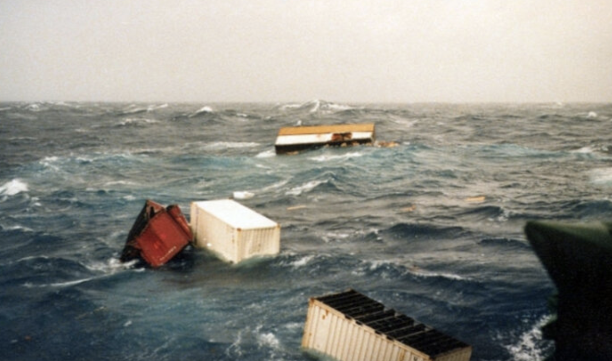
Oceanographers have quietly used lost cargo to build the most precise maps of ocean currents ever created.
MIT Press Reader
U.S. presidents have promised short, decisive wars in Afghanistan, Iraq and Iran. All have proved much more difficult than advertised and fallen far short of the political goals set at the beginning.
NPR
The NBA’s best defenders haven’t just adapted to the offensive trends of their respective eras—they’ve disrupted them.
Bleacher Report
NBA Commissioner Adam Silver has put out a statement regarding LeBron James’ free agency decision. Golden State Warriors Draymond Green just sent Silver a strong message.
Sporting News
The Los Angeles Lakers have wanted to get a deal done for an NBA champion athletic wing. It seems like those ambitions are quickly fading.
Sporting News
While most teams would roll out the red carpet for star free agent LeBron James, Boston Celtics legend Paul Pierce feels that his former franchise doesn’t need his services.
Bleacher Report
The Portland Trail Blazers roster is making some changes after not signing Matisse Thybulle in free agency. ESPN insider Shams Charania is the first to report
Sports Illustrated
PORTLAND, Ore. (AP) — A warmup jacket worn by Wilt Chamberlain during the 1972 NBA finals that was bought by a teenager for $3.07 at an Oregon thrift store sold for $89,600 at auction on Monday.
The Associated Press
Democrats see an opening in rural states for the first time in decades. In Iowa, it’s about water.
POLITICO
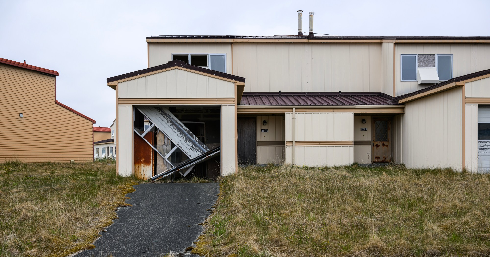
U.S. phone customers pay more than $340,000 a year for an Anchorage company to keep homes and buildings on Alaska’s Adak Island wired for obsolete internet service. All but a few of them sit empty.
ProPublica
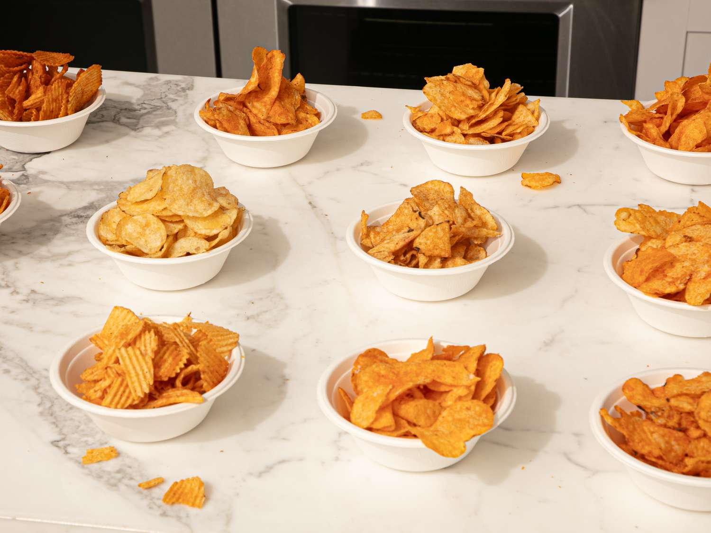
To find the best barbecue chips, Serious Eats editors taste-tested 12 brands you’re likely to find at your local supermarket and online, including Lay’s, Kettle Brand, and Ruffles.
Serious Eats
The new data is the starkest sign yet of the country’s demographic crisis.
Semafor
The first day Roza Gilles showed up for her new job at a high-rise office building in downtown Palm Beach in the summer of 2009, a woman was massaging Jeffrey Epstein’s feet.
CNN
Anne Hathaway once faced so much backlash she had to be defended by Ta-Nehisi Coates. She’s finally entered a new phase.
Slate
When Joseph Lamont Williams refused to leave the public park where he has lived for years, he was charged with a felony. Camping bans are on the rise as states seek to crack down on homelessness.
NPR
The biggest force that shapes what we eat isn’t taste. It’s trade
The Walrus
The U.S. State Department has issued a worldwide warning for traveling Americans due to the war with Iran.
Travel + Leisure
These European destinations are finally saying ‘enough’
Time Out
Rumored renovations could affect the Magic Kingdom’s chill favorite.
Time Out
Portugal is consistently ranked as one of the best places for Americans to retire abroad. Here’s how to do it.
Condé Nast Traveler
After a punishing 40-mile trek through the Grand Canyon, I ditched my hiking boots to test America’s first earthing park. To my surprise, my battered feet loved it.
Outside
The media mogul touched on the impact of strong storytelling and how travel will always remain relevant at Travel + Leisure’s 2026 World’s Best Summit.
Travel + Leisure
While it’s no superhero blockbuster, Driver previously led the ‘Star Wars’ sequel trilogy, playing Kylo Ren.
The Hollywood Reporter
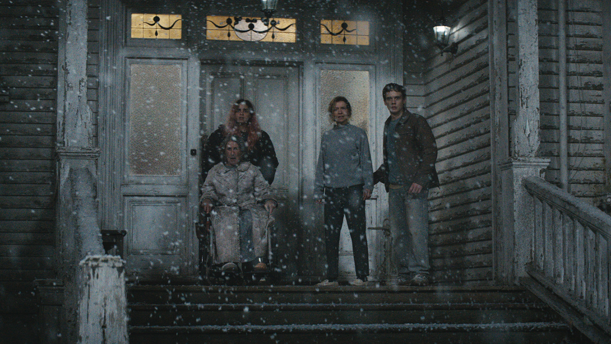
Coming to both Universal Studios Hollywood and Universal Orlando Resort, the newest installment in New Line Cinema’s ongoing franchise hit theaters this month.
The Hollywood Reporter
A gorier Cyclops, a darker Circe, an entirely new ending: The writer-director felt free to reshape the 2,700-year-old epic poem for the Imax age.
Los Angeles Times
Thor battles Doctor Doom, reunites with Steve Rogers and assembles a crossover superteam in the new ‘Avengers: Doomsday’ trailer.
Los Angeles Times
Future, The Rolling Stones, Stella Lefty and more chart highlights of the rankings dated July 25, 2026.
Billboard
John Lydon teases Public Image Ltd.’s upcoming tour and discusses his feud with the Sex Pistols.
Rolling Stone
African artists are proving that today’s biggest records are built through memes, choreography, and short-form video long before they become streaming hits.
OkayAfrica
Shakira brings out Tyla, Ed Sheeran and Burna Boy to her first show post FIFA World Cup in New York City.
Billboard
If you use big tech's products, your data belongs to them unless you do something about it. Here's how.
CNET
A stylish way to deal with an all-too-common problem.
Apartment Therapy
I tried Kendric Jacobs’ viral cake mix hack that promises an ultra-moist, “melt in your mouth” result.
Today Show
Maybe make one of each. Just so you can compare them all.
Country Living
Get the most out of every last leaf.
Good Housekeeping
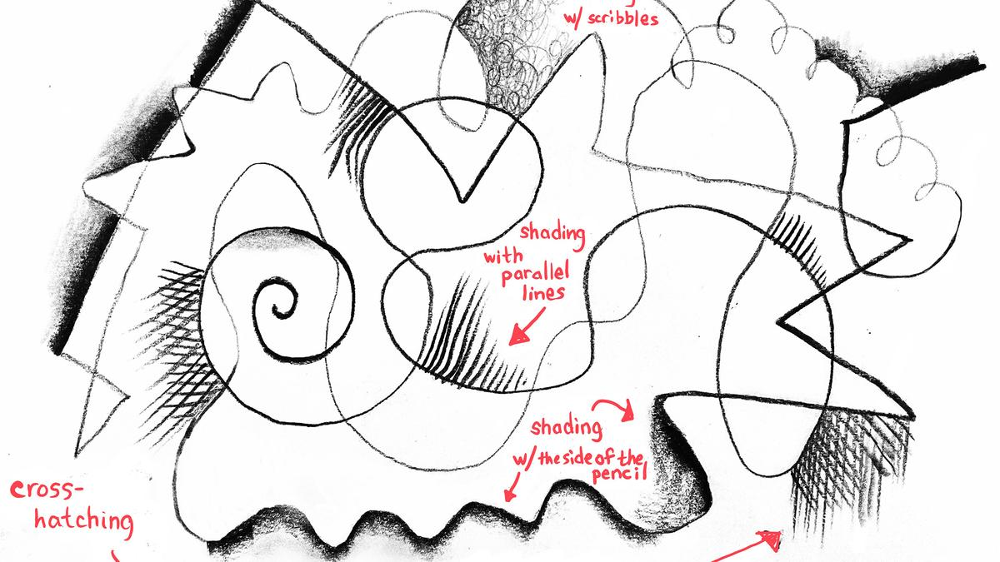
As a child, you knew the thrill of conjuring with a pencil. Reclaim that pleasure with these activities (no talent needed)
Psyche
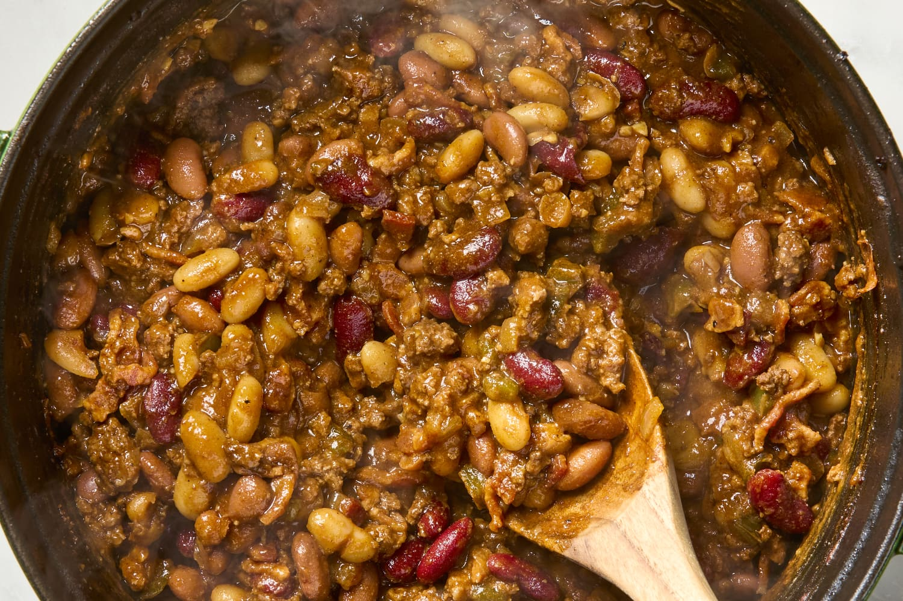
They’re always the first dish gone.
The Kitchn
I love one pan dinners, and these marry me chicken meatballs and orzo simmer in a version of the popular “marry me” sauce. The chicken meatballs take a turn in the skillet, and afterward, orzo cooks in the sauce. The orzo and the meatballs “get married” n
Allrecipes
Those green shoots inside garlic cloves may look alarming, but they do not necessarily mean the garlic has gone bad. Here’s what to know.
Serious Eats
These Roman pasta recipes highlight the signature dishes of Lazio, including carbonara, cacio e pepe, gricia, amatriciana, and more. Discover timeless classics alongside chef-inspired takes on Rome’s most beloved pastas.
Food & Wine
Christopher Nolan supposedly went “woke.” He did not go broke.
Slate
A too-busy lineup featuring Madonna, BTS, Justin Bieber, and Shakira ultimately disappointed audiences.
Esquire
Chloe Fineman opened up about her “bittersweet” exit from ‘Saturday Night Live.’
Rolling Stone
The nightclub’s collaboration with Spanish “experience” brand elrow returns, with an endearing lack of embarrassment, to clubbing’s Eurotrash roots.
Paste Magazine